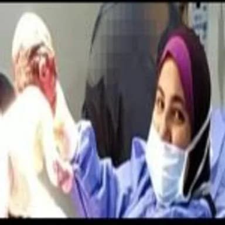

د. نجلاء فتوح عبدالله — استشاري أمراض النساء والتوليد والعقم، خريجة كلية طب قصر العيني، ترافقك بخبرة وثقة من أول استشارة وحتى ما بعد الولادة.

حصلت د. نجلاء فتوح عبدالله على تأهيلها الأكاديمي من كلية طب قصر العيني، وتعمل استشاري أمراض النساء والتوليد والعقم، مع خبرة تراكمية في متابعة الحمل، الولادة الطبيعية والقيصرية، وجراحات المناظير النسائية.
تحرص الدكتورة على متابعة كل حالة بشكل فردي، بدءًا من الاستشارة الأولى وحتى الرعاية اللاحقة، بأسلوب هادئ يمنح المريضة الطمأنينة في كل خطوة.
فحص شامل ومناقشة الحالة الصحية والخطة المناسبة
سونار دوري وتقييم مستمر لصحة الأم والجنين
طبيعية أو قيصرية، وفق ما يناسب كل حالة بأمان
متابعة ما بعد الولادة ودعم الرضاعة الطبيعية
رعاية كاملة قبل وأثناء وبعد الولادة، طبيعية أو قيصرية.
تقييم وعلاج حالات العقم والحقن المجهري بمتابعة دقيقة.
استئصال الرحم والأورام بالمنظار بأحدث الأساليب الطبية.
متابعة دقيقة لنمو الجنين بتصوير عالي الدقة.
تشخيص وعلاج أورام الرحم والمبيض وبطانة الرحم.
متابعة وعلاج اضطرابات الدورة وما بعد انقطاع الطمث.
تصوير عالي الدقة لمتابعة نمو الجنين بوضوح تام.
لإجراء الجراحات النسائية بأقل تدخل وأسرع تعافي.
متابعة دقيقة ومنظمة لتاريخ كل حالة عبر الزيارات.
تقييم حقيقي من المرضى
بناءً على ٧٠٣ تقييم عبر منصة فيزيتا للحجز الطبي
حدائق القبة، متفرع من شارع الشيخ غراب، أعلى البنك الأهلي، القاهرة
سبت، أحد، ثلاثاء، أربعاء، خميس
من ٧:٣٠ إلى ٩:٣٠ مساءً
٣٠٠ جنيه مصري
01014593039 (موبايل / واتساب)